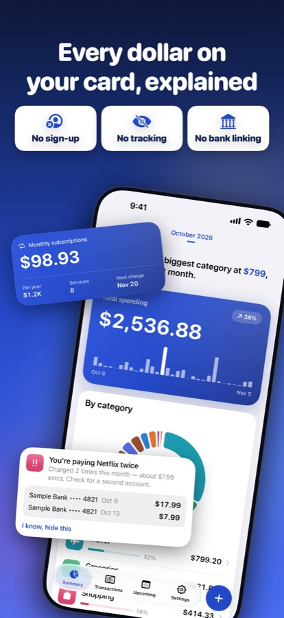
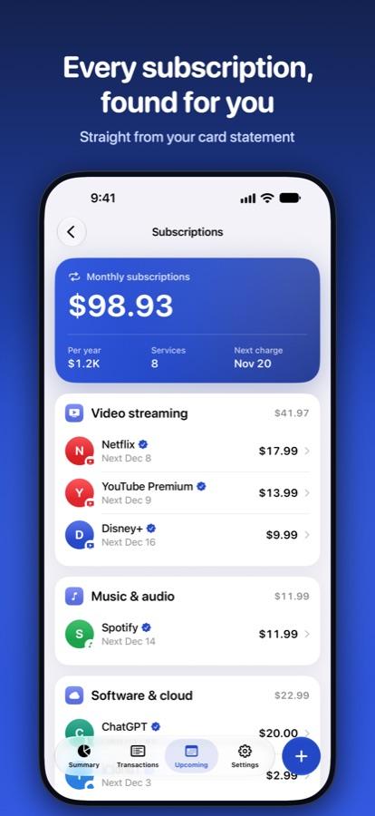
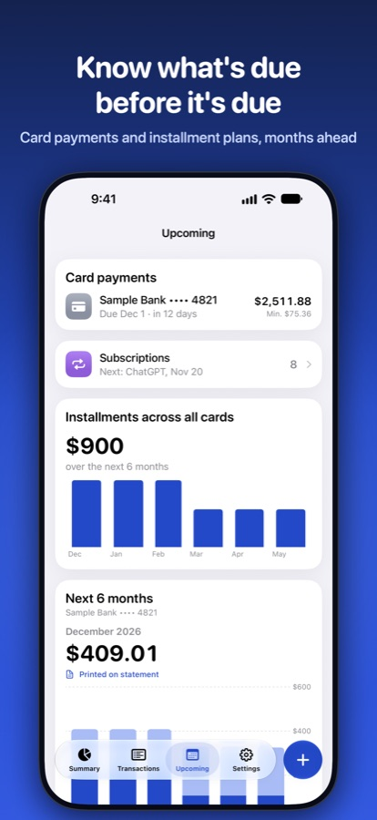

Cardsight
See every card's spending, from your statements
Add a credit card statement (PDF, screenshot or scan) and Cardsight turns it into a clear picture: where your money went, which subscriptions you pay, what installments are still coming and whether anything was charged twice. No account, no bank login, no ads.



What it does
Spending by category
Every transaction sorted, with totals checked against the statement.
Subscriptions
Recurring charges are found for you, with reminders before they renew.
Upcoming installments
Know what you still owe in the months ahead, across all your cards.
Double charges
The same charge twice? Cardsight points it out.
Private by default
Your data stays on your device and in your own iCloud. No account, no tracking.
iPhone, iPad and Mac
Synced through your private iCloud.
Contact & support
Questions, bug reports or a statement that didn't read well? Write to us. We usually answer within a few days.
info@enucuzsistem.comFrequently asked questions
How do I add a statement?
Open the PDF in your bank's app or in Mail, tap Share and choose Cardsight. You can also tap + in Cardsight and pick a PDF, a screenshot or a scan.
Who reads my statement?
Apple's private cloud first, which doesn't keep your data. Only if it can't, and only with your permission, our server reads the text, with your name and card numbers masked first. See the Privacy Policy.
The total doesn't match my statement.
Cardsight checks every statement against its printed total and opens the review screen when something is off. Bonus or points lines that aren't money are kept apart under Card points. If it's still wrong, email us the bank name (not the statement) and we'll look into it.
Can I lock my phone while a statement is read?
Yes. Reading continues in the background and its progress shows on the Lock Screen and in the Dynamic Island. If iOS stops it, it picks up the next time you open Cardsight.
How do I cancel Premium?
Premium is an App Store subscription. Open Settings > your name > Subscriptions on your device, choose Cardsight and tap Cancel Subscription.
Where is my data?
On your device and in your private iCloud. You can delete it in Settings.
Türkçe
Cardsight kredi kartı ekstreni (PDF, ekran görüntüsü ya da tarama) okur; harcamalarını, aboneliklerini, gelecek taksitlerini ve çift çekimleri gösterir. Hesap yok, banka girişi yok, reklam yok.
Soru, hata bildirimi ya da iyi okunmayan bir ekstre için info@enucuzsistem.com adresine yazın.
Ekstre nasıl eklenir?
PDF'i banka uygulamanda ya da Mail'de aç, Paylaş'a dokun ve Cardsight'ı seç. Cardsight'ta + ile PDF, ekran görüntüsü ya da tarama da ekleyebilirsin.
Ekstremi kim okuyor?
Önce Apple'ın özel bulutu okur ve verini saklamaz. Yalnızca okuyamazsa ve iznin varsa sunucumuz metni okur; adın ve kart numaraların önce maskelenir.
Okurken telefonu kilitleyebilir miyim?
Evet. Okuma arka planda sürer, ilerlemesi kilit ekranında ve Dynamic Island'da görünür. iOS durdurursa Cardsight'ı açtığında kaldığı yerden devam eder.
Premium'u nasıl iptal ederim?
Ayarlar > adın > Abonelikler'e gir, Cardsight'ı seç ve Aboneliği İptal Et'e dokun.